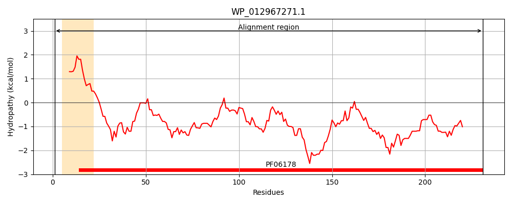
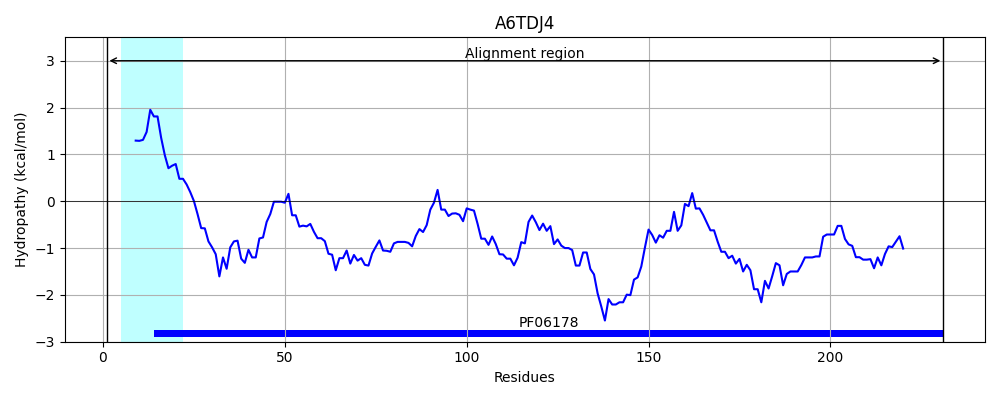
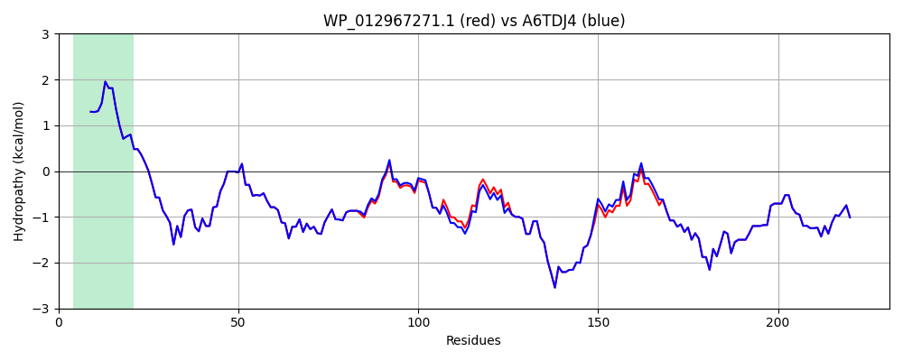

Hit Accession: A6TDJ4
Hit TCID: 1.B.35.1.7
Hit Description: gnl|BL_ORD_ID|632 gnl|TC-DB|A6TDJ4|1.B.35.1.7 Putative uncharacterized protein yjhA OS=Klebsiella pneumoniae subsp. pneumoniae (strain ATCC 700721 / MGH 78578) GN=yjhA PE=4 SV=1
Mach Len: 231
e:0.000000
Query TMS Count : 1
Hit TMS Count: 1
TMS-Overlap Score: 0.900000
Predicted Substrates:CHEBI:29470;2-(Biaryl)carbapenems
BLAST Alignment:
Score: 1232 , Bit scores: 479 bits, E-value: 7.1e-175, Alignment length: 231, Percentage identity: 99
Query: 1 MLKRSLVLAALCGMSFAATAVTIDLRHEFIDGGKSDKSNADRVSVSHRFANGLGFTVEAKWRSGGDNGSQPYSDVVGNGHEDTISWRWKATSNFFLTPGFTIESNDSRSIYKPHLHVQYSFDNGFYVAARYRYEYTRYPNNAGKDDDKVNRGDAWAGFALGDWRTELNYVYARSSEGVSRNDNKPYSQEYNVKVAYKLDNNWSPYGEIGNVGVNDRSDRQTRFRVGVAYSF 231
MLKRSLVLAALCGMSFAATAVTIDLRHEFIDGGKSDKSNADRVSVSHRFANGLGFTVEAKWRSGGDNGSQPYSDVVGNGHEDTISWRWKATSN FLTPGFTIESNDSRSIYKPHLH QYSFDNGFYVAARYRYEYTRYPNNAGKDDDKVNRGDAWAGF LGDWRTELNYVYARSSEGVSRNDNKPYSQEYNVKVAYKLDNNWSPYGEIGNVGVNDRSDRQTRFRVGVAYSF
Sbjct: 1 MLKRSLVLAALCGMSFAATAVTIDLRHEFIDGGKSDKSNADRVSVSHRFANGLGFTVEAKWRSGGDNGSQPYSDVVGNGHEDTISWRWKATSNLFLTPGFTIESNDSRSIYKPHLHAQYSFDNGFYVAARYRYEYTRYPNNAGKDDDKVNRGDAWAGFVLGDWRTELNYVYARSSEGVSRNDNKPYSQEYNVKVAYKLDNNWSPYGEIGNVGVNDRSDRQTRFRVGVAYSF 231 | Protein Hydropathy Plots: |
|---|
|  |  |
Pairwise Alignment-Hydropathy Plot:
|
|---|
|  |